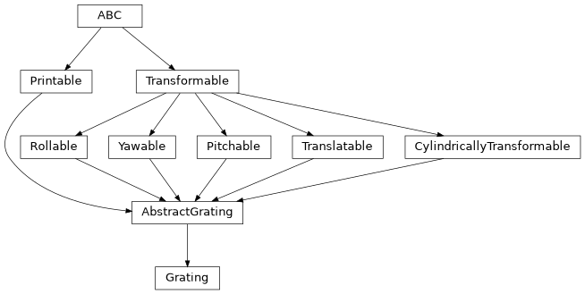

Grating#
- class esis.optics.Grating(serial_number='', manufacturing_number='', angle_input=<Quantity 0. deg>, angle_output=<Quantity 0. deg>, sag=None, material=None, rulings=None, num_folds=0, halfwidth_inner=<Quantity 0. mm>, halfwidth_outer=<Quantity 0. mm>, width_border=<Quantity 0. mm>, width_border_inner=<Quantity 0. mm>, clearance=<Quantity 0. mm>, distance_radial=<Quantity 0. mm>, azimuth=<Quantity 0. deg>, translation=<Quantity 0. mm>, pitch=<Quantity 0. deg>, yaw=<Quantity 0. deg>, roll=<Quantity 0. deg>)[source]#
Bases:
AbstractGratingA model of the diffraction gratings of this instrument.
Attributes
The angle of the grating's aperture.
The nominal angle of the incident light from the field stop.
The nominal angle of reflected light to the detectors.
The angle of rotation about the axis of symmetry.
The minimum distance between adjacent physical gratings.
The distance of this object from the axis of symmetry.
The distance from the apex to the inner edge of the clear aperture.
The distance from the apex to the outer edge of the clear aperture.
An additional number describing this diffraction grating.
The optical material composing this grating.
The order of the rotational symmetry of the optical system.
The pitch angle of this object.
The roll angle of this object
The ruling pattern of this grating.
The sag function of this grating.
The serial number of this diffraction grating.
Represent this object as an
optikasurface.the coordinate transformation between the global coordinate system and this object's local coordinate system
A transformation which can arbitrarily translate this object.
The nominal width of the border around the clear aperture.
The width of the border on the narrow edge of the grating.
The yaw angle of this object.
Methods
__init__([serial_number, ...])to_string([prefix])Public-facing version of the
__repr__method that allows for defining a prefix string, which can be used to calculate how much whitespace to add to the beginning of each line of the result.Inheritance Diagram

- Parameters:
serial_number (str)
manufacturing_number (str)
angle_input (Quantity)
angle_output (Quantity)
sag (None | AbstractSag)
material (None | AbstractMaterial)
rulings (None | AbstractRulings)
num_folds (int)
halfwidth_inner (Quantity | AbstractScalar)
halfwidth_outer (Quantity | AbstractScalar)
width_border (Quantity | AbstractScalar)
width_border_inner (Quantity | AbstractScalar)
clearance (Quantity | AbstractScalar)
distance_radial (Quantity | AbstractScalar)
azimuth (Quantity | AbstractScalar)
translation (Quantity | AbstractCartesian3dVectorArray)
pitch (Quantity | AbstractScalar)
yaw (Quantity | AbstractScalar)
roll (Quantity | AbstractScalar)
- to_string(prefix=None)#
Public-facing version of the
__repr__method that allows for defining a prefix string, which can be used to calculate how much whitespace to add to the beginning of each line of the result.
- property angle_aperture: Quantity | AbstractScalar#
The angle of the grating’s aperture.
This is equal to \(2 \pi / n\) radians, where \(n\) is the order of the rotational symmetry of the optical system.
- angle_input: Quantity = <Quantity 0. deg>#
The nominal angle of the incident light from the field stop.
- azimuth: Quantity | AbstractScalar = <Quantity 0. deg>#
The angle of rotation about the axis of symmetry.
- clearance: Quantity | AbstractScalar = <Quantity 0. mm>#
The minimum distance between adjacent physical gratings.
- distance_radial: Quantity | AbstractScalar = <Quantity 0. mm>#
The distance of this object from the axis of symmetry.
- halfwidth_inner: Quantity | AbstractScalar = <Quantity 0. mm>#
The distance from the apex to the inner edge of the clear aperture.
- halfwidth_outer: Quantity | AbstractScalar = <Quantity 0. mm>#
The distance from the apex to the outer edge of the clear aperture.
- material: None | AbstractMaterial = None#
The optical material composing this grating.
- num_folds: int = 0#
The order of the rotational symmetry of the optical system.
This determines the aperture wedge angle of this grating.
- pitch: Quantity | AbstractScalar = <Quantity 0. deg>#
The pitch angle of this object.
- roll: Quantity | AbstractScalar = <Quantity 0. deg>#
The roll angle of this object
- rulings: None | AbstractRulings = None#
The ruling pattern of this grating.
- sag: None | AbstractSag = None#
The sag function of this grating.
- property transformation: AbstractTransformation#
the coordinate transformation between the global coordinate system and this object’s local coordinate system
- translation: Quantity | AbstractCartesian3dVectorArray = <Quantity 0. mm>#
A transformation which can arbitrarily translate this object.
- width_border: Quantity | AbstractScalar = <Quantity 0. mm>#
The nominal width of the border around the clear aperture.
- width_border_inner: Quantity | AbstractScalar = <Quantity 0. mm>#
The width of the border on the narrow edge of the grating.
- yaw: Quantity | AbstractScalar = <Quantity 0. deg>#
The yaw angle of this object.